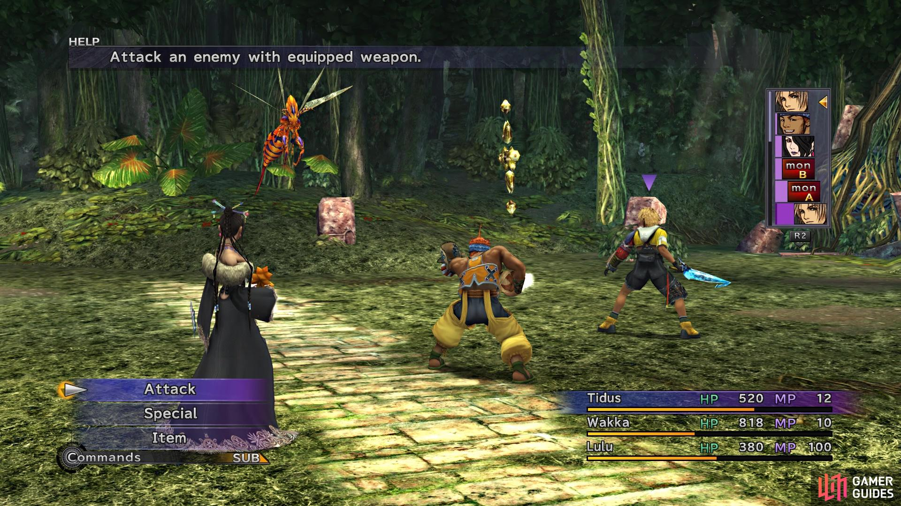
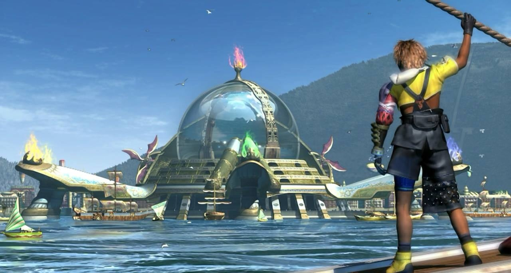
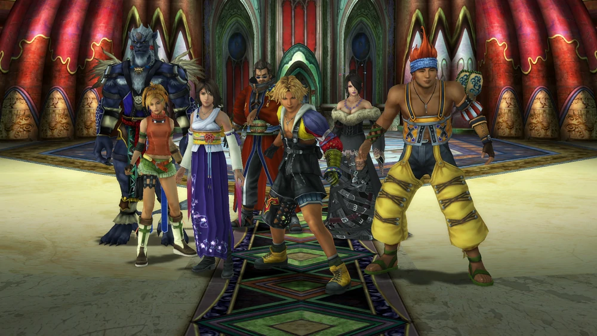
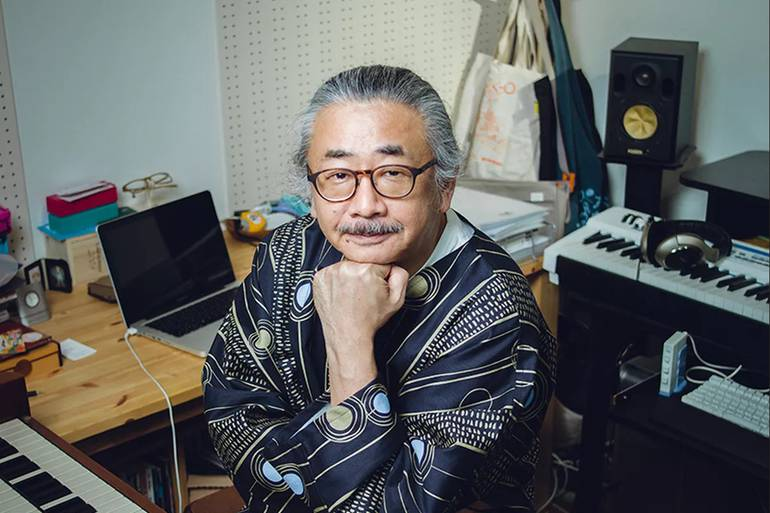

Fantasy X (ファイナルファンタジーX Fainaru Fantajī Ten?) é um jogo eletrônico de RPG desenvolvido e publicado pela SquareSoft. Ele é o décimo título principal da série Final Fantasy e foi originalmente lançado como um exclusivo para PlayStation 2 em 2001. O jogo marcou a transição da franquia de fundos pré-renderizados para áreas tridimensionais, marcando também a primeira instância em que a série utilizou dublagem. Final Fantasy X substitui o sistema de combate "Active Time Battle" pelo "Conditional Turn-Based Battle", utilizando um novo sistema de nivelamento chamado "Sphere Grid".
Final Fantasy X Capa PS2
A história se passa no mundo fantástico de Spira e segue um grupo de aventureiros e sua busca para derrotar um monstro conhecido como Sin. O jogador controla Tidus, um atleta de blitzball que vai para Spira após sua cidade natal Zanarkand ser destruída por Sin. Tidus rapidamente conhece Yuna em sua peregrinação para destruir o monstro
A produção de Final Fantasy X começou em 1999 com um orçamento de mais de 32 milhões de dólares e uma equipe de mais de cem pessoas. Pela primeira vez na série a trilha sonora não foi composta em sua totalidade pelo compositor Nobuo Uematsu; Masashi Hamauzu e Junya Nakano foram chamados para auxiliá-lo. X foi um grande sucesso comercial e de crítica, vendendo mais de 6,6 milhões de cópias e se tornando o primeiro jogo da série a ganhar uma sequência direta: Final Fantasy X-2.
Jogabilidade
Final Fantasy X é apresentado em uma perspectiva em terceira pessoa como os jogos anteriores da série Final Fantasy, em que os jogadores controlam diretamente Tidus, o personagem principal, pelo mundo de jogo e interagem com objetos e pessoas. Entretanto, diferentemente de seus predecessores, os mapas de mundo e das cidades foram totalmente integrados, com o terreno ao redor das diferentes localidades sendo renderizado em escala. Quando algum inimigo é encontrado, o ambiente muda para uma área de batalha onde os dois lados aguardam sua rodada para poder atacar.
A jogabilidade de X diferente de títulos Final Fantasy anteriores na falta de um mapa de jogo visto de uma perspectiva aérea. Os outros jogos possuíam uma representação das grandes áreas entre as cidades e outros locais, que era usada para viagens de longa distância. Todas as localidades são essencialmente contínuas em X e nunca saem do mapa de jogo. Conexões regionais são em sua maioria lineares, formando um único caminho através dos lugares do jogo; uma dirigível fica disponível ao progredir na história a dá ao jogador a habilidade de navegar mais rapidamente. X assim como seus predecessores contém vários minijogos, mais notavelmente o esporte chamado "blitzball".
Combate

Final Fantasy X Combate
Final Fantasy X introduz o sistema de combate "Conditional Turn-Based" (CTB) para substituir o tradicional da série "Active Time Battle" (ATB), utilizado desde Final Fantasy IV. Enquanto o conceito do ATB empregava elementos em tempo real, o CTB é um formato baseado em rodadas que pausa a batalha durante as rodadas do jogador. Dessa forma o novo sistema permite que o jogador selecione sua ação sem a pressão do tempo. Uma linha do tempo gráfica no canto superior direito da tela informa quem receberá a próxima rodada e como as ações tomadas irão influenciar nas subsequentes vezes. O jogador pode controlar até três personagens em combate, com um sistema de troca permitindo que um personagem seja substituído por outro em qualquer momento. O ataque especial de grande dano "Limit Breaks" volta em X na forma dos "Overdrives". A maioria das técnicas são interativas nessa nova incarnação, precisando que certos botões sejam pressionados para aumentar sua efetividade. Apesar de inicialmente os Overdrives só poderem ser utilizados após um personagem receber uma quantidade significativa de dano, o jogador pode modificar esses requerimentos posteriormente.
O jogo também apresenta uma reformulação no sistema de convocação empregado nos títulos anteriores. Enquanto que nos jogos passados a criatura convocada iria aparecer, realizar uma única ação e então partir, os "Aeons" de X chegam e substituem por completo a equipe de batalha, lutando em seus lugares até que o aeon vença o combate, seja derrotado pelo inimigo ou seja dispensado pelo jogador. Aeons possuem suas próprias estatísticas, comandos, ataques especiais, feitiços e overdrives. O jogador pode adquirir cinco aeons durante o jogo, porém outros três adicionais podem ser obtidos ao completar diversas missões paralelas.
Sphere Grid
Como os títulos anteriores da série, os jogadores tem a oportunidade de desenvolver e melhorar seus personagens ao derrotarem inimigos e adquirirem itens, porém o tradicional sistema de pontos de experiência é substituído por um novo chamado "Sphere Grid". Ao invés dos personagens ganharem bônus estatísticos pré-determinados ao subirem de nível, cada um ganha "Sphere Levels" após coletarem um número suficiente de pontos de habilidade. Os Sphere Levels permitem que o jogador mova-se ao redor do Sphere Grid, uma rede pré-determinada de nódulos interconectados consistindo em vários bônus de estatística e habilidade. "Spheres" são aplicadas nesses nódulos, destravando sua função para o personagem selecionado.
O sistema Sphere Grid permite que os jogadores customizem totalmente os personagens ao invés de manterem seus papéis projetados na batalha, como transformar a maga branca Yuna em uma potência física ou o espadachim Auron em um curador. As versões internacional e PAL do jogo incluem uma versão "Especialista" opcional do Sphere Grid; nessa versão, todos os personagens começam no meio da rede e podem seguir qualquer caminho que o jogador decidir. Em troca, a rede especialista tem menos nódulos no total, diminuindo o número de melhorias disponíveis.
Sinopse
Mundo

Final Fantasy X Mundo
Final Fantasy X se passa no mundo ficcional de Spira, que consiste em uma grande massa de terra dividida em três subcontinentes e cercada por pequenas ilhas tropicais. Apesar de predominantemente populada por humanos, outras espécies vivem em Spira como por exemplo os Al Bhed, um sub-grupo de humanos tecnologicamente avançados com seu próprio idioma; os Guado, uma espécie semelhante a peixes humanoides; e os Ronso, seres mais primitivos parecidos com leões de pele azul e grandes chifres na testa.[carece de fontes] Nesse mundo, os mortos que não são enviados ao Farplane por um convocador passam a invejar os vivos e se transformam em "fiends", monstros que são encontrados por todo o jogo, entretanto, aqueles com grande apego ao mundo dos vivos às vezes conseguem manter sua forma humana. Spira foi modelada para se assemelhar ao Sudeste Asiático, principalmente em sua vegetação, topografia, arquitetura e nomes.
Personagens

Final Fantasy X Personagens
Há sete personagens jogáveis em Final Fantasy X: Tidus, um alegre adolescente jogador de blitzball vindo de Zanarkand e que tenta voltar para casa depois de ser transportado para Spira ao encontrar Sin; Yuna, uma convocadora em uma jornada para obter o Final Aeon e derrotar a enorme criatura Sin; Kimahri Ronso, um guerreiro da espécie Ronso que protege Yuna desde a infância dela; Wakka, um jogador de blitzball cujo irmão mais novo foi morto por Sin; Lulu, uma maga negra estoica próxima de Yuna e Wakka; Auron, um ex-monge guerreiro que trabalhou com os pais de Tidus e Yuna para derrotar Sin dez anos antes; e Rikku, uma jovem Al Bhed prima de Yuna que é a primeira pessoa amigável que Tidus conhece ao chegar em Spira.
Enredo
O jogo conta a história de Tidus, estrela do time de Blitzball. Durante um jogo de seu time, ele é sugado por uma entidade misteriosa e acorda no mar. Resgatado por pessoas estranhas, ele descobre que está 1000 anos no futuro. É revelado a Tidus por uma garota misteriosa da raça de humanos Al-Bhed que a entidade que o atacou é conhecida como Sin.
Quando o barco é novamente atacado ele cai no oceano e vai parar em uma praia, onde conhece Wakka, outro jogador de blitzball. Ao voltar com ele para a vila de Besaid, descobre que ele é guardião da Summoner Yuna, filha do High Summoner Braska.
Tidus descobre que seu pai, Jecht, um dia foi guardião de Braska e, como esta era a única pista que tinha sobre onde estava, decide seguir Yuna e seus guardiões: Wakka, Lulu e Kimahri. A ele é apresentada a religião de maior número de seguidores em Spira: o Templo de Yevon. Ele tem então a chance de aprender sobre as Fayths, os envios de almas e as próprias conjurações feitas por Yuna. Contudo, uma coisa não lhe é revelada: que a summoner pretende morrer para derrotar Sin e trazer paz ao mundo.
À medida que sua jornada avança, Tidus reencontra Auron, seu tutor, grande amigo de Jecht e um dos guardiões da Braska, que revela a localização de seu pai: Jetch se tornara Sin. Com grande pesar, Tidus continua sua jornada e Auron se oferece para ser guardião de Yuna.
Mais adiante, Tidus reencontra a garota Al-Bhed que o ajudou no mar: trata-se de Rikku, prima de Yuna por parte de mãe. Ela também se torna uma guardiã da summoner, mantendo sua verdadeira natureza como um segredo, pelo fato de Wakka ter um profundo preconceito contra o povo Al-Bhed.
A peregrinação de Yuna é cheia de perigos, principalmente pelo fato de Seymour Guado tentar aproveitar-se dela para seus próprios objetivos escusos. O grupo chega a ser excomungado da Igreja de Yevon e perseguido como um bando de hereges, mas eles conseguem superar as dificuldades e chegar a Zanarkand, a cidade que, teoricamente, fora o lar de Tidus há mil anos.
Lá, Tidus precisa lidar com duas informações perturbadoras: uma é de que Yuna se sacrificaria ao fim da peregrinação, invocando o Final Aeon; a outra, que ele não era uma pessoa real, mas apenas um sonho do povo de Zanarkand, inteiramente transformado em Fayths.
Por fim, Yuna não precisa se sacrificar: o grupo consegue derrotar Sin e revelar sua verdadeira natureza. Durante toda a história de Spira, a grande fonte de morte era Yu Yevon, o fundador da maior religião do mundo. Contudo, Tidus encontra seu fim: ao enviar todas as almas dos Fayths para o Farplane, Yuna confessa que sempre o amou. Nesse momento, Tidus pula da Aeronave e desaparece.
Desenvolvimento
O Desenvolvimento de Final Fantasy X começou em 1999, custando cerca de aproximadamente quatro milhões de ienes japoneses (aproximadamente US$32.467), com uma equipe contando com mais de 100 pessoas, a maioria dos quais trabalharam em jogos anteriores da série, sendo produzido simultâneamente com Final Fantasy IX. O Executivo e produtor Hironobu Sakaguchi afirmou que, embora tivesse preocupações sobre a transição da série para 3D, integrando vozes, ações, e a transição para a história em tempo real, concluiu que o sucesso da série Final Fantasy pode ser atribuído à capacidade de vencer desafios e inovação constante. O escritor Kazushige Nojima ficou particularmente preocupado como estabelecer uma ligação no relacionamento entre o jogador e o personagem principal. Assim, ele escreveu a história de tal ordem que o progresso do jogador através do mundo e aumento do conhecimento sobre ela é refletida em Tidus' com sua própria compreensão e narração. O jogo inicialmente teria elementos de funcionalidade on-line, mas estas ídeias foram abandonadas durante a produção do jogo, onde jogos on-line só puderam se tornar parte da série Final Fantasy através de Final Fantasy XI.
O diretor de mapa Takayoshi Nakazato queria implementar um conceito de mapa do mundo com uma abordagem mais realista do que o do tradicional visto nos Final Fantasy's, em linha com o realismo do jogo 3D do fundo, com cenários pré-renderizados. Tal como um jogador dos jogos da série Final Fantasy, o diretor de batalha Toshiro TSUCHIDA queria recriar elementos onde achava interessante ou sentia que pudesse ser divertido, que finalmente levou à remoção do famoso sistema Active Time Battle (ATB), e em vez disso, o partido integrou intermutabilidade um novo sistema o Condicional Vire-Based Battle (CTB). Inicialmente, Final Fantasy X ia ter característica nômade de inimigos visíveis no mapa de campo, sem costura e transições em batalhas, e os jogadores teriam a opção de se deslocar a paisagem durante o encontros com os inimigos. O diretor de Batalha e arte Shintaro Takai explicou que era sua intenção que as batalhas em Final Fantasy X fosse para nos depararmos como uma parte natural da história e não um elemento independente. No entanto, devido às limitações de hardware e do sistema, essas ideias foram não utilizados até Final Fantasy XI e Final Fantasy XII. Em vez disso, foi feito um compromisso, em que algumas transições de tela para o campo de batalha nas arenas fossem feitas relativamente harmoniosa com a implementação de um efeito Motion Blur. O desejo de transições sem costura também levou à implementação do novo sistema de poder ser visto em no jogo. Yoshinori Kitase explicou que o objetivo por detrás da Sphere Grid é dar aos jogadores um meio de aumentar a sua interactividade com os personagens' dando atributos, de modo que eles seriam capazes de acompanhar o desenvolvimento desses atributos.
Final Fantasy X apresenta inovações na integração dos personagens como expressões faciais, conseguida através de captura de movimentos e tecnologia de animação esquelética. Esta tecnologia permitiu que os animadores pudessem criar movimentos realistas com os lábios, que foram, então, programado para coincidir com o discurso do jogo e com as vozes dos atores. Nojima, revelou que a inclusão de vozes permitiu a ele, expressar emoção mais poderosa do que antes, e ele foi, portanto, capaz de manter a história simples. Ele também disse que a presença de voz dos atores o levou a fazer várias alterações para o script, de forma a coincidir com a voz dos atores personalidades com os personagens do jogo fosse retratada. A inclusão de vozes, no entanto, levaram a dificuldades. Com o jogo tendo cenas já programadas em torno das vozes japonesas, a equipe de localização da versão Inglês de Final Fantasy X enfrentou a dificuldade de estabelecer diálogos Inglês orientada com os textos e o obstáculo da integração dessa modificação do texto com o ritmo e o calendário dos movimentos de lábios dos personagens.
Áudio

Final Fantasy X Compositor
Final Fantasy X marca pela primeira vez na série onde o compositor Nobuo Uematsu teve ajuda e assistência na composição da franquia principal. Seus colegas compositores em Final Fantasy X foram Masashi Hamauzu e Junya Nakano. Eles foram escolhidos para trabalhar na trilha sonora baseada em sua capacidade de criar música que era diferente do estilo criado por Uematsu enquanto ainda é capaz de trabalhar em conjunto.
O jogo apresenta três canções com elementos vocais, incluindo a balada Japa-pop "Suteki Da Ne" (que se traduz como "Não é maravilhoso?"). A letra foi escrita por Kazushige Nojima, e os arranjos instrumentais foram compostas por Uematsu. A canção é executada pela cantora japonesa folk Rikki, a quem a equipa contactou para cantar a música, enquanto procuravam um cantor cuja música refletia uma atmosfera de Okinawan. "Suteki Da Ne" também é cantada em japonês na versão americana de Final Fantasy X. A música foi lançada como single em 2001 pela DigiCube e relançada em 2004 pela Square Enix.[14] Como "Eyes on Me" de Final Fantasy VIII e "Melody of Life" de Final Fantasy IX, uma versão orquestrada de "Suteki Da Ne" é utilizada como parte do fim do jogo. As outras músicas com letras são no estilo heavy metal apresentada abertura do jogo chamada "Otherworld", cantada em Inglês por Bill Muir, e "Hymn of the Fayth", uma peça cantada usando silabário japonês.
Recepção
Final Fantasy X foi bem recebido pela mídia, com elevados números de vendas. Dentro de quatro dias de seu lançamento no Japão, o jogo tinha vendido mais de 1,4 milhões de cópias em pré-encomendas. Estes números excederam as performances de Final Fantasy VII e Final Fantasy IX, em um período comparável. Assim Final Fantasy X se tornou o primeiro jogo do PlayStation 2 a chegar na marca de dois milhões e quatro milhões de cópias vendidas. Em Outubro de 2007, o jogo foi listado como o oitavo jogo mais vendido para o PlayStation 2. O jogo já vendeu 6,6 milhões a partir de 20 de janeiro de 2004. Atualmente o jogo já conta com 7,95 milhões de cópias vendidas mundialmente se tornando o terceiro da série Final Fantasy mais vendido perdendo para o segundo lugar Final Fantasy VIII com mais de oito milhões de cópias e o primeiro lugar Final Fantasy VII com mais de nove milhões de cópias mundialmente. Final Fantasy X recebeu o Prêmio Melhor Jogo da 6th CESA GAME AWARDS 2001-2002. Final Fantasy X chegou em terceiro na IGN's no "Top 25 Jogos PS2 de todos os tempos" lista feita em 2007. Na sexta anual Interactive Achievement Awards, em 2003, foi nomeado para "Outstanding Achievement in Animation" e "Console Role-Playing Game of the Year".
Final Fantasy X Notas
Críticas
As críticas japonesas e ocidentais têm geralmente dado a Final Fantasy X alta pontuação nas revisões. a famosa revista japonesa Famitsu e Famitsu PS2 deram ao jogo quase uma pontuação perfeita 39/40, e os antigos leitores da revista votaram como o melhor jogo de todos os tempos, no início de 2006. Outro jogo revista japonesa chamada The Play Station deu ao jogo uma pontuação de 29/30. A Famitsu, Famitsu PS2, e The Play Station expressas especialmente respostas favoráveis para o enredo do jogo, gráficos e as famosa Cenas de Computação.
David Smith da IGN ofereceu louvor as vozes dos atores emprestadas paras os personagens e as inovações na jogabilidade, principalmente com a nova forma de invocações onde se pode utilizar os summons mágicos nas batalhas, a opção de mudar seus personagens do grupo durante a batalha, o desenvolvimento do personagem e sistemas de gerenciamento de inventário durante todo o jogo. Eles também sentem que a parte gráfica do jogo teve uma grande evolução se comparado aos seus antecessores, em todas as áreas possíveis, e que o jogo como um todo era "o melhor jogo da série em termos visuais e indiscutivelmente a melhor jogabilidade". Greg Kasavin da GameSpot elogiou o enredo do jogo, chamando-lo de "surpreendentemente complexo", satisfazendo a vontade de continuar o jogo até o fim, bem como a sua prevenção sem os famosos clichês visto em até mesmo RPG's louváveis. Ele também elogiou a música, a sensação era "diversa e bem adaptada às diversas cenas do jogo". Os gráficos do jogo foram elogiados pela Raymond Padilla da GameSpy's que refere a eles como "top-notch", dando louvor ao modelos dos personagens, arranjo de fundos, as cutcenes, e animações.
No Reino Unido a revista Edge muito conhecida pelas suas publicações negativas aos jogos, classificaram o jogo consideravelmente inferior, criticá-lo por não fornecer uma experiência de jogo satisfatória da geração. A revista citou que o jogo tinha um sistema de batalha "fracionariamente complexa" do que nas batalhas anteriores da série, e julgou o diálogo como "nauseating". Andrew Reiner da Game Informer criticou a linearidade do jogo e que os jogadores já não eram capazes de viajar pelo mundo por Chocobo ou controlando aeronave. O Tom Bramwell da Eurogamer disse que os enigma de segmentos do jogo foram simplesmente "deprimente" e "inútil", e que embora o "Sphere Grid" deu "um toque" de novidade, se tornou um sitema chato no jogo.
Legado
Devido ao seu sucesso comercial e de crítica, a Square Enix divulgou uma sequência direta de Final Fantasy X, em 2003, intitulada de Final Fantasy X-2. A sequência está definida dois anos após a conclusão de Final Fantasy X e estabelece novos conflitos e dilemas e resolução de pontas soltas deixadas pelo jogo original. Como resultado da recepção de Final Fantasy X, Yoshinori Kitase e Kazushige Nojima decidiu estabelecer uma pequena conexão relacionada com Final Fantasy X e Final Fantasy VII, outro jogo popular da série Final Fantasy.
Os avanços alcançados em retratar emoções realistas com Final Fantasy X como as vozes através de expressões faciais e detalhamentos já tornou um grampo da série, com Final Fantasy X-2 e outros títulos posteriores (como Dirge of Cerberus: Final Fantasy VII e Final Fantasy XII) que também apresenta esta evolução. Percorrer ambientes tridimensionais em tempo real em vez de um mapa overworld também se tornou um padrão da série, como demonstrado no Final Fantasy XI e Final Fantasy XII.